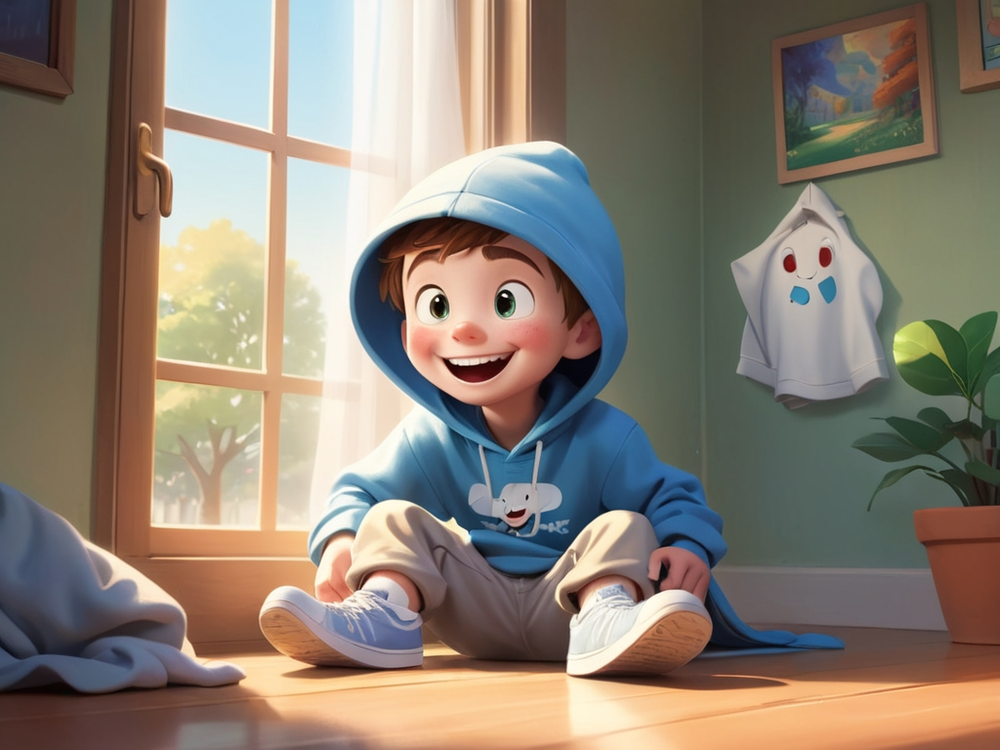
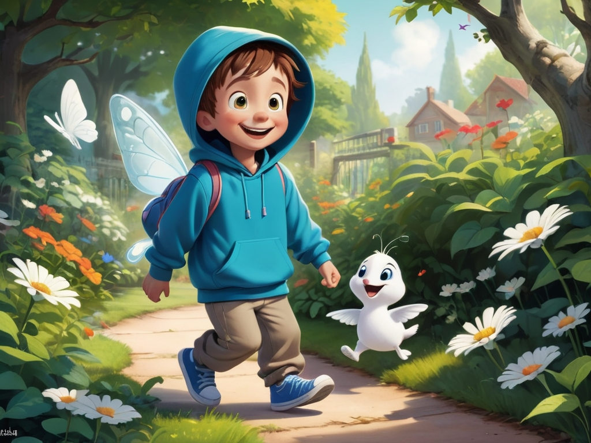
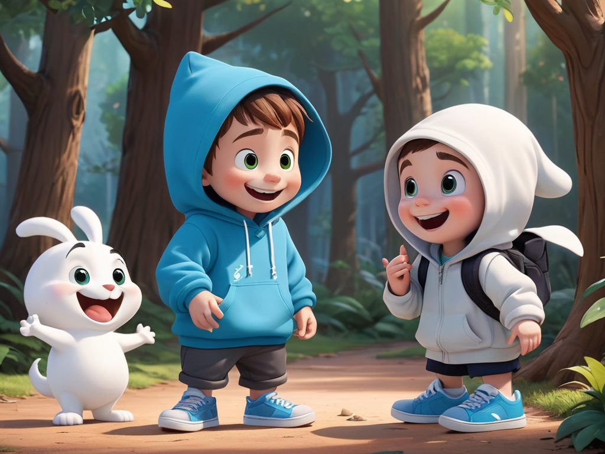
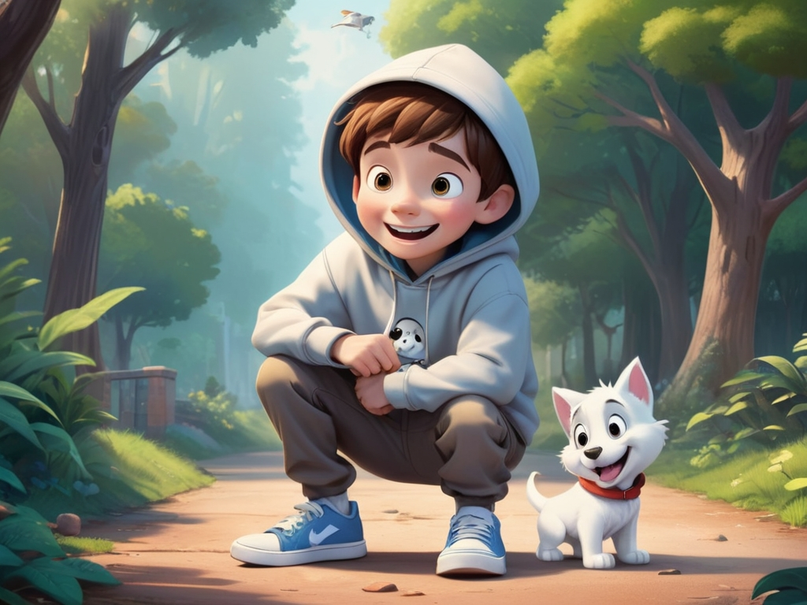
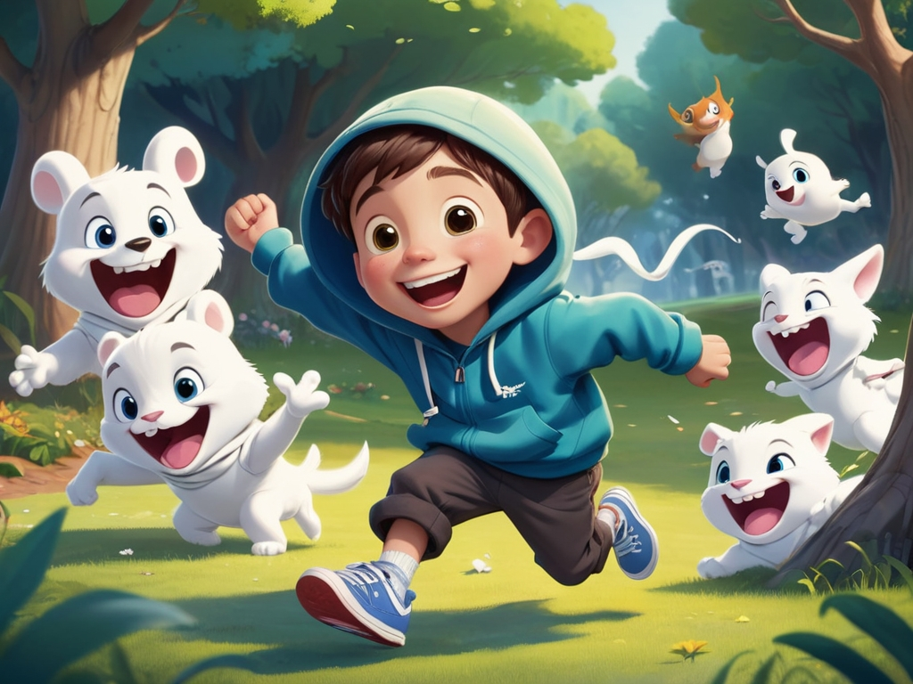
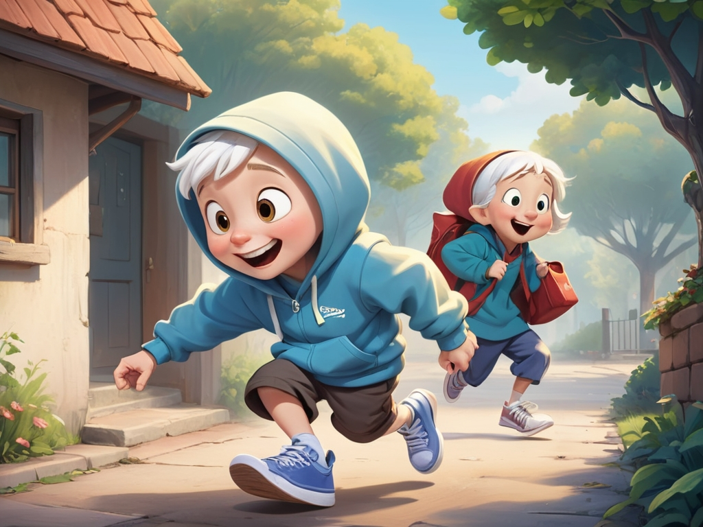
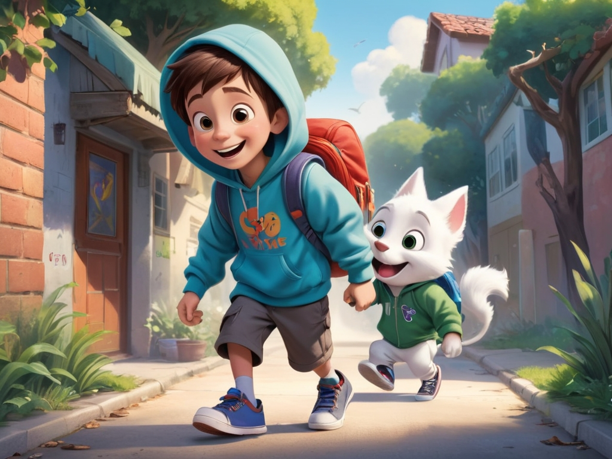
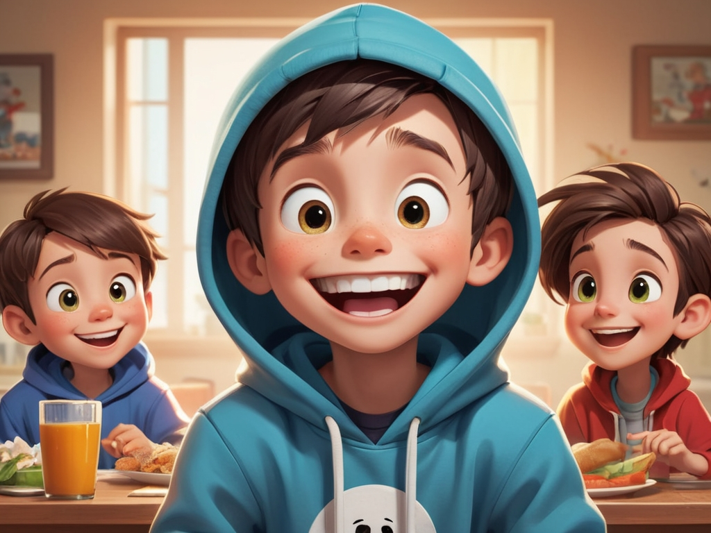
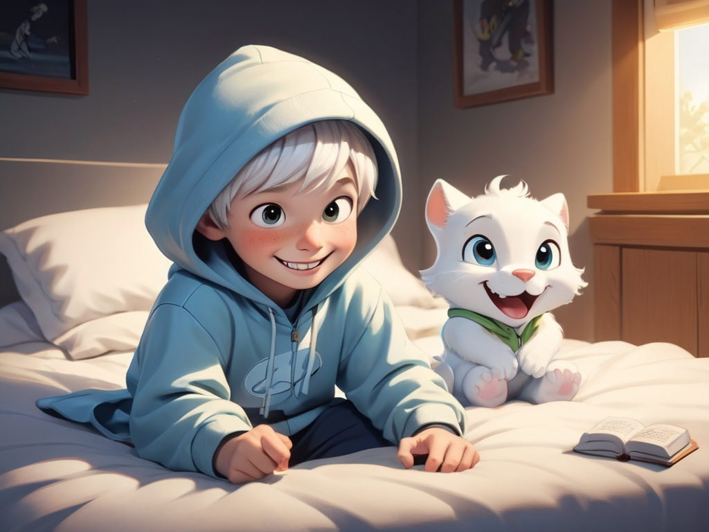

場景一
在森林裡，有一隻叫做 Casper 的小狐狸，他非常喜歡交朋友。

場景二
有一天，Casper 遇見了一隻正在哭泣的小兔子。他走上前說：「妳還好嗎？」

場景三
小兔子說她找不到回家的路了。Casper 決定幫助她。
場景四
他們一起問了貓頭鷹先生，貓頭鷹指了一條小徑給他們。

場景五
路上他們經過一條河流，Casper 用石頭鋪了一座小橋讓小兔子通過。

場景六
終於，他們看到小兔子的家。她開心地跳了起來！

場景七
小兔子的媽媽很感謝 Casper，還邀請他們一起吃紅蘿蔔蛋糕。

場景八
他們在花園裡玩了整個下午。

場景九
太陽下山了，Casper 跟小兔子道別，踏上回家的路。

場景十
從那天起，他們成為了最好的朋友，常常一起冒險、一起笑。
